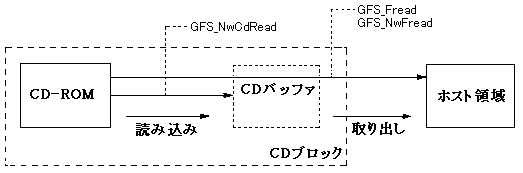
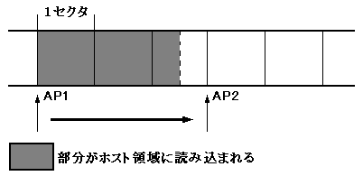

★PROGRAMMER'S GUIDE
★ファイルシステムライブラリ
★PROGRAMMER'S GUIDE
★ファイルシステムライブラリ
図4.1 アクセス関数モデル

図4.2 アクセスポインタの移動

ファイル種別 | セクタ長(byte) |
|---|---|
CD-ROM Mode1 | 2048 |
CD-ROM Mode2 Form1のみ | 2048 |
CD-ROM Mode2 Form2のみ | 2324 |
CD-ROM Mode2混在 | 不定 |
DOSファイル | 2048 |
メモリファイル | 2048 |
パラメータ | 説明 | 変更する関数 | 初期値 |
|---|---|---|---|
アクセスポインタ | 読み込みを開始 | GFS_Seek | 0 |
取り出しモード | 取り出した後、CD | GFS_SetGmode | GFS_GMODE_ERASE |
転送モード | 取り出し処理を行 | GFS_SetTmode | GFS_TMODE_CPU |
読み込みパラメータ | 1回の読み込み | GFS_SetReadPara | GFS_RPARA_DFL |
取り出しパラメータ | 1回の取り出し | GFS_SetTransPara | 1 |
★PROGRAMMER'S GUIDE
★ファイルシステムライブラリ